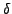

Algebraic Multigrid (AMG) is often optimal, in that O(n) complexity is realized by efficiently reducing significant residual components on carefully constructed coarse spaces. A crucial part of constructing coarse spaces is determining how algebraically smooth error at one point depends on algebraically smooth error at a neighboring point. If dependence is strong, the two points are considered strongly connected. Accurate strength of connection information allows AMG to correctly pick coarse spaces and to construct the corresponding interpolation operators.
An accurate strength-of-connection measure exists for M-matrices, but strength-of-connection is not well-understood for more general classes of matrices. The purpose of this talk is to present a new general strength-of-connection measure grounded in the relaxation-based evolution of an initial Dirac -function. Motivated by the relationship between weighted-Jacobi relaxation and the time marching of ordinary differential equations (ODEs), an ODE perspective is presented for understanding the new strength-of-connection measure. The ODE perspective is also very enlightening when examining strengths and weaknesses of classical strength-of-connection measures and recent attempts to define a general strength-of-connection concept, such as compatible relaxation and an energy based approach.
We also present encouraging numerical results for the new strength-of-connection measure used in conjunction with smoothed aggregation. The modified smoothed aggregation solver is used to accelerate Krylov-subspace methods applied to diffusion, convection-diffusion and linearized elasticity problems. Last, the effectiveness of the new strength-of-connection measure when applied to higher-order discretizations is explored.